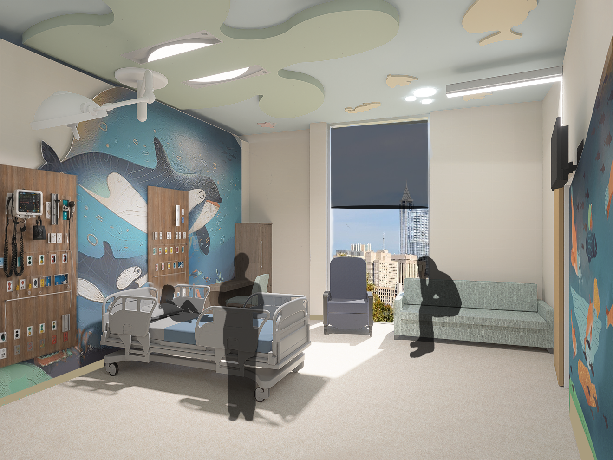
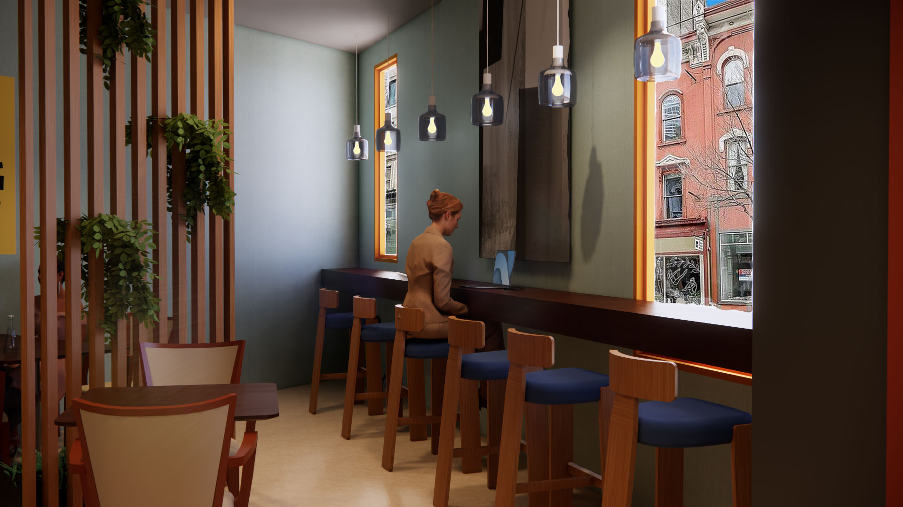
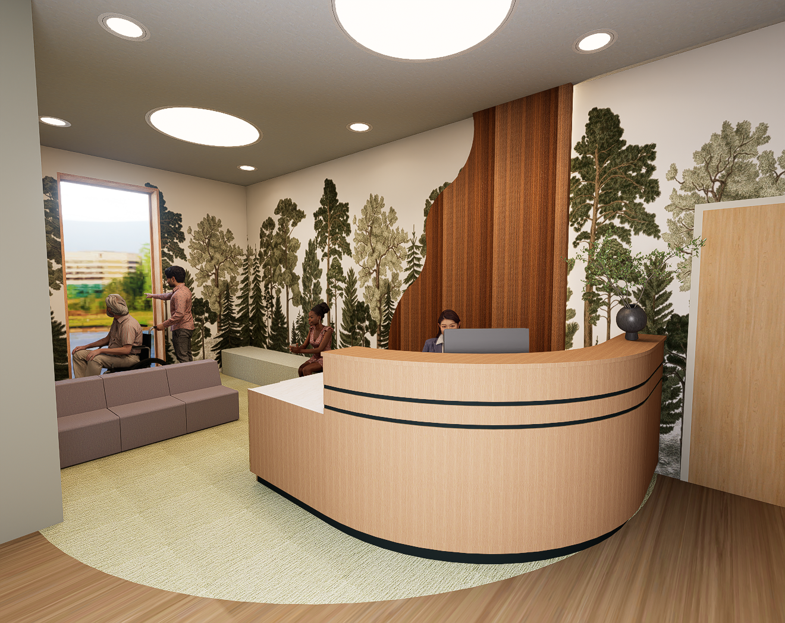

01 / HEALTHCARE
Pediatric Intensive Care Unit
A people-centered approach to comfort, clarity, and family support in a healthcare setting.
Concept · Materials · RenderingSELECTED WORK
A growing collection of academic projects, explorations, and design solutions.

01 / HEALTHCARE
A people-centered approach to comfort, clarity, and family support in a healthcare setting.
Concept · Materials · Rendering
02 / ADAPTIVE REUSE
Exploring how a building’s existing character can inform a thoughtful new program.
Space Planning · Research
03 / HOSPITALITY
Balancing accessibility, material choices, and a welcoming atmosphere.
Layout · Finishes · Details
04 / BEHAVORIAL SETTING
Balancing accessibility, material choices, and a welcoming atmosphere.
Layout · Finishes · Details